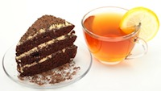
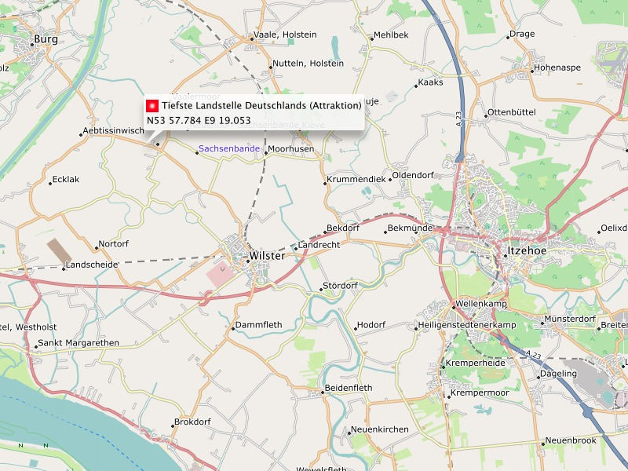
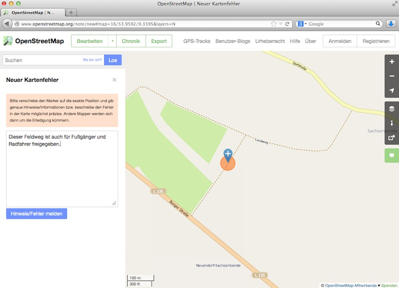
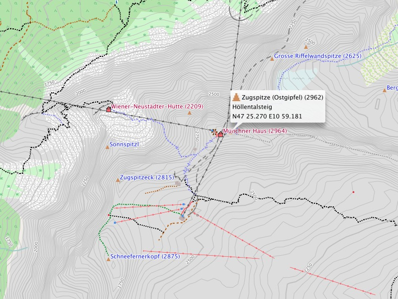

Support our project financially
Obolus for project support:
 If the Freizeitkarte project does something good for you maybe you can think about supporting us a little. Don't regard this a commercialization but rather as an invitation to "a cup of tea and cake". Through your donation you are helping us to continue the project. How you can donate you find in the imprint.
Become godparent of a map
In May of 2011 the first scripts were developed for creating
different, open map. But it took until September of 2011 until
the first Freizeitkarte map (Germany) could be published. Other
maps were following: Austria, Switzerland, France ... all these
maps are tested intensively by map users before they are being
published - and we like this to stay that way in the future.
Are you interested in becoming
a godparent of a map and support our project?
As godparent you would be testing the map of a specific country
prior to release, you would check for feedback to "your" map in
the forum, you could propose country specific requests for
change and put them into action. While doing this you enjoy
creating something completely different out of a geo-data base
with it's bits and bytes - something that people use in their
everyday life - "your" Freizeitkarte map. You don't have to be a
computer science major, the drive to support is the most
important requirement. Some help is always possible, to what
extend you decide yourself ...

Map representation in BaseCamp: Germanys deepest land mark (-3,54 meters) near Neuendorf-Sachsenbande.
Improve the data for our maps:
Support the OpenStreetMap core data of this map. Through doing
that you will also improve our Freizeitkarte maps. Missing or
incorrectly documented map data can be edited on OpeenStreetMap.
This is easier than you may think. You just have to register with
OpenStreetMap and try it. Like this other map users can benefit
from your knowledge.
Editing with the online-editor iD
Report errors on the maps:
Without beeing an expert and without registration you can provide info about missing or wrong data with the Report an error functionality. Please don't forget to have on "your errors" - maybe someone trying to fix it has a question.
Reporting an error
Missing something?
If something works different or looks different (or does not work at all) let us know. Only like this we can check the issue and may already have fixed it with the next map release.

Map representation in BaseCamp: The Zugspitze - germanys highest land mark (2962 meters).
You have derived a specialized map:
Visual representation:
The visual representation of the map is defined through a so
called TYP file. You could, with some technical background
knowledge, change the representation of the map radically. This
could be because you like "your" design better or you may have
done changes to better support your GPS device. Share your work
with other users.
Using the development environment of the map it "easily" possible to derive new or specialized map form the Freizeitkarte maps. Share these map with other users.